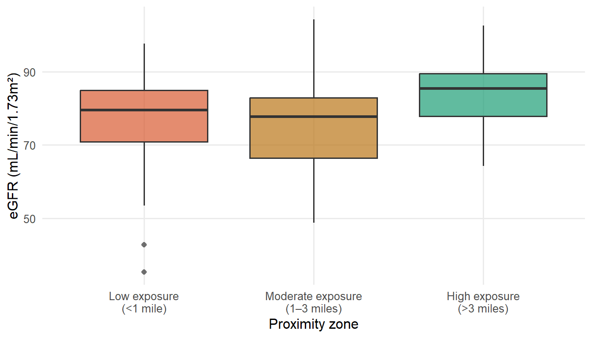

my_data <- data.frame(
id = 1:5,name = c("Alice", 'Bob', "Charlie", "David", "Eve"),
score=c(85,92,78,95,88)
)In-Class Review Solutions
Exam 02 Preparation
- How can the below code be improved according to good coding style?
Answer
name on new line
Bob needs double quotes not single
space after each comma with numbers
space around equals
my_data <- data.frame(
id = 1:5,
name = c("Alice", "Bob", "Charlie", "David", "Eve"),
score = c(85, 92, 78, 95, 88)
)- How can the below code be improved according to good coding style?
df <- data.frame(grp = c("A","A","B","B","C","C"),
val=c(10,15,20,25,30,28))
ggplot(df, aes(x = grp,y=val)) +
geom_boxplot()+geom_point(position = position_jitter(width = .1))
meanvaluefromdataframe <- df |>
group_by(grp) |> summarise(m = mean(val))Answer
val needs to be properly indented
spaces around the numbers
(optional) parentheses on a new line (prob not necessary)
spaces after comma and near
y = valspace around plus, geom_point on new line
df <- data.frame(grp = c("A", "A", "B", "B", "C", "C"),
val = c(10, 15, 20, 25, 30, 28)
)
ggplot(df, aes(x = grp, y = val)) +
geom_boxplot() +
geom_point(position = position_jitter(width = .1))
mean_val <- df |>
group_by(grp) |>
summarise(m = mean(val))- How can the below code be improved according to good coding style?
ggplot(mtcars, aes(wt, mpg, colour=factor( cyl), shape = factor(vs))) +
geom_point() +theme(legend.text = element_text(size = 8, colour = 'red'))Answer
eliminate unnecessary spaces before
cylneed spaces around the equal sign between
colourandfactorput
themeon a new linedouble quotes around “red”
ggplot(mtcars, aes(wt, mpg, colour = factor(cyl), shape = factor(vs))) +
geom_point() +
theme(legend.text = element_text(size = 8, colour = "red"))- Suppose you have 100 samples of 100 observations each that are binary (0/1), each with probability of success \(p=.3\). What does the Central Limit Theorem say about the distribution of sample averages? (In other words, what would a histogram of the sample averages look like? Centered around which value?) What if our observations were drawn from a continuous but skewed population distribution?
Because we have 100 samples (N > 30), CLT applies and the sample averages would be normally distributed. Depending on whether I am averaging the total number of successes within each set of 100 observations or whether I am averaging the percent success within each set of the 100 observations the obserations will be centered around the value of np = 0.3100 = 30 or centered around the value p, where p =.3.
If our observations were drawn from a continuous but skewed population distribution - as long as I have > 30 samples the CLT will apply and the data will still be normally distributed
- Researchers compare fasting glucose levels measured before and after a 12-week exercise program among the same participants.
- Which type of t-test should they use & why?
paired t-test since it’s the same group
- Write the null hypothesis in words. What would the alternative for a two-sided test be? How about for a one-sided test?
Answer
\(H_0\): mean glucose level is the same before and after
For two-sided: \(H_A\): mean glucose level different in before vs. after
For one-sided \(H_A\): mean glucose level lower after vs. before
- A new rapid test for strep throat is being evaluated. Assume that \(H_0\) is that the person truly doesn’t have strep throat. What would a Type I error mean? What would a Type II error mean? What is a danger of a Type I error here? What is a danger of a Type II error here?
Type 1 error is when the test says the person does have strep when they actually don’t. Type 2 is when the test says the person does not have strep when they actually do. Danger of Type 1: unnecessary stress, lead to more testing etc. Danger of Type 2: contagious, spreading without you knowing you have it!
- Explain how the t-distribution differs from the standard normal distribution. When would we use a t-distribution instead of Z?
t-distribution has fatter tails, accounting for uncertainty when we don’t know \(\sigma\). We use it when we don’t know population standard deviation.
- Write the R code to find the following (on exams, you won’t need to write code):
- The 95th percentile of a t(df = 12) distribution.
Answer
qt(.95, 12)[1] 1.782288- The probability that a
t(df = 8)random variable is greater than 2.1.
1-pt(2.1, df = 8)[1] 0.03446876Answer
- The 90th percentile of a \(N(\mu = 3, \sigma = 5)\) distribution.
qnorm(.90, mean = 3, sd = 5)[1] 9.407758- What is the definition of a p-value?
Probability of getting a statistic as extreme or more extreme than the one we observed given the null hypothesis was true.
- Researchers are studying whether a new herbal supplement helps reduce recovery time after a mild viral infection compared to a placebo. Ten participants were randomly assigned to either the supplement group or the placebo group. After recovery, the number of days until full recovery was recorded:
| Group | Recovery Time (days) |
|---|---|
| Supplement | 4, 6, 5, 7, 6 |
| Placebo | 8, 9, 6, 10, 9 |
Because the data are not normally distributed, the researchers decide to use a Mann–Whitney U test.
- State the null and alternative hypotheses for a two-sided test in words.
Answer
In words:
\(H_0\): There is no difference in median recovery time between the supplement and placebo groups.
\(H_A\): The supplement group has different recovery times than the placebo group.
- Using R, we can calculate the test statistic with
wilcox.test. See output below (note you will not be expected to know this function for the exam, but you should know how to interpret p-value for these tests):
# Data
supplement <- c(4, 6, 5, 7, 6)
placebo <- c(8, 9, 6, 10, 9)
# Mann–Whitney U test
wilcox.test(supplement, placebo, alternative = "two.sided")
Wilcoxon rank sum test with continuity correction
data: supplement and placebo
W = 2, p-value = 0.03389
alternative hypothesis: true location shift is not equal to 0What is your conclusion, using \(\alpha = .05\)?
We reject \(H_0\), we have statistically significant evidence that the supplement group has a different recovery time than the placebo group at \(\alpha = .05\)
- Suppose that instead we calculated a one-sided test. The new alternative would be the following:
\(H_A\): The supplement group has shorter recovery times than the placebo group.
Suppose that we computed the test-statistic and got a p-value of .0047. What is your conclusion at a 5% significance level?
We would reject \(H_0\), we have statistically significant evidence that the supplement group has shorter recovery time compared to the placebo group at \(\alpha = .05\).
- Below are two power calculations. In which object (
p1orp2) will the power be higher? Why?
p1 <- power.t.test(n = 28,
delta = 1.5,
sd = 2.3,
sig.level = 0.05,
type = "two.sample",
alternative = "two.sided")
p2 <- power.t.test(n = 28,
delta = 1.5,
sd = 5,
sig.level = 0.05,
type = "two.sample",
alternative = "two.sided")The power in p1 will be higher, due to a decreased standard deviation.
- Explain two reasons why it’s important to perform a power / sample size calculation during the design process of a study.
Need to know that we have a good chance of showing the anticipated difference, if it exists! Also need to show that necessary resources (human, animal, financial, time, etc.) will be minimized.
- Dr. Stats is studying whether average daily sugar intake differs between two groups of teenagers: those who regularly eat breakfast and those who skip breakfast. She loads her dataset and runs the following code in R:
t.test(sugar ~ breakfast_group, data = teen_nutrition)- What is this code doing? Describe in 1–2 sentences what is being compared and the test is being performed.
runs an independent two‑sample t‑test comparing mean sugar intake between two groups defined by the variable breakfast_group
- Specify the null and alternative hypothesis for this test in words and in symbols.
Answer
Words:
\(H_0\): There is no difference in mean daily sugar intake between the groups who regularly eat breakfast and those who skip breakfast
- \(H_A\): The group who does skip breakfast has a different average sugar intake than the group who eats breakfast.
Symbols:
\(H_0\): \(\mu_{\text{breakfast}} = \mu_{\text{no breakfast}}\)
\(H_A\): \(\mu_{\text{breakfast}} \neq \mu_{\text{no breakfast}}\)
- Suppose Dr. Stats looks at histograms of sugar intake for each group and sees that the distributions are heavily skewed with strong outliers. She wants a test that does not assume normality. What non‑parametric test corresponds to the two‑sample t‑test in this situation?
Wilcoxin rank-sum test which is also at times called Mann-Whitney U test- which corresponds to the two sample t-test
- Research shows that frequent involuntary police stops are associated with chronic stress and elevated cortisol levels. The average cortisol level in US adults is μ = 15 μg/dL, with a known population standard deviation of \(\sigma\) = 6 μg/dL. A public health researcher samples n = 50 adults from a neighborhood with documented high rates of police stops. The sample mean cortisol level is \(\bar{X}\) = 22.8 μg/dL.
- Using the central limit theorem, write the formula for the test statistic \(Z = \frac{\bar{X} - \mu}{SE}\) where \(SE=\frac{\sigma}{\sqrt{n}}\) and substitute the given values into the expression. Leave as a fraction.
Answer
\(Z = \frac{22.8 - 15}{\frac{6}{\sqrt{50}}}\)
- If the computed z‑statistic is very large in magnitude (far from 0), what would this tell the researcher about cortisol levels in this community?
The average cortisol levels in this sample are much larger than expected by chance if they came from a population with a mean value of 15 μg/dL
- State the null and alternative hypotheses in words and symbols for testing whether mean cortisol levels in this neighborhood differ from the national average
Words:
\(H_0\): The mean cortisol levels in this neighborhood are 15 μg/dL
- \(H_A\): The mean cortisol levels in this neighborhood is not equal to 15 μg/dL
Symbols:
\(H_0\): \(\mu_{\text{c}} = 15\)
\(H_A\): \(\mu_{\text{c}} \neq 15\)
- If the population standard deviation \(\sigma\) was unknown, what test would the researcher use instead of a z‑test?
one sample t-test, where you would use the sample standard devation as an estimate of the population standard deviation
- Based on the output below, what conclusion should the researcher draw at \(\alpha\) = .05?
One Sample t-test
data: cortisol
t = 8.5764, df = 49, p-value = 2.545e-11
alternative hypothesis: true mean is not equal to 15
95 percent confidence interval:
18.62547 20.84438
sample estimates:
mean of x
19.73493 We would reject the null hypothesis and conclude that there is evidence to suggest the mean cortisol level in this neighborhood is not equal to 15 μg/dL
- What is the distribution of our test statistical under the null hypothesis (include the name and the degrees of freedom, if applicable)
t-distribution with (n-1) = 39 degrees of freedom
- Interpret the 95% confidence interval in the context of the study.
We are 95% confident that the true mean cortisol levels lie within (18.36, 20.91)
- Would the confidence interval be wider or smaller if you generated a 99% confidence interval?
The 99% confidence interval would be wider. Increasing the confidence level increases the critical value (confidence multiplier), so the interval must widen to ensure a higher level of certainty that it contains the true mean
- A researcher designing a two‑sample t‑test increases the sample size from n = 25 per group to n = 60 per group. How does this affect statistical power?
Increases statistical power. Larger sample size and more data means smaller SE which means it is easier to detect true effects
- Researchers are investigating whether residential proximity to a toxic waste site is associated with kidney function, measured by estimated glomerular filtration rate (eGFR, mL/min/1.73m²). Lower eGFR values indicate reduced kidney function. Adults were sampled from three distance zones from the nearest registered toxic waste site: less than 1 mile, 1–3 miles, and more than 3 miles away.

- Write the null and alternative hypotheses for this ANOVA in words.
Answer
\(H_0\): There is no differences in mean eGFR across different categories of distance from the nearest registered toxic waste site
\(H_A\): The mean eGFR differs for at least one of the categories defined by distance from the nearest registered toxic waste site
- What does the F-statistic tell you about between-group versus within-group variation in this study? What does a small F-statistic close to 1 suggest?
fit <- aov(egfr ~ zone, data = egfr_data)
summary(fit) Df Sum Sq Mean Sq F value Pr(>F)
zone 2 1469 734.7 4.723 0.0113 *
Residuals 87 13535 155.6
---
Signif. codes: 0 '***' 0.001 '**' 0.01 '*' 0.05 '.' 0.1 ' ' 1F‑statistic compares the amount of variation between groups to the amount of variation within groups, with an F-statistic of 4.723, this means the variation between the zone groups is about 4.7 times larger than the variation within the groups.
An F-statisic close to 1 suggests the between‑group variation and within‑group variation are about the same size. Group means are not meaningfully different relative to the noise within groups.
- Look at the ANOVA table above. Based on the ANOVA output, do you reject or fail to reject the null hypothesis at \(\alpha = .05\)? Justify your answer using the p-value from the table.
Since 0.01 is less than 0.05, you would reject the null hypothesis, and you have evidence to suggest at least one group is different
- A classmate says: “The ANOVA was significant, but I still want to run pairwise t-tests between all three zone pairs to see which ones differ.” Should you run pairwise comparisons here? Explain in 1-2 sentences why or why not.
Since the F-test was significant, it means there is evidence of at least one group being different, so we can run pairwise comparisons. We did want to look first at the ANOVA results before doing these pairwise tests to protect Type I error rate. For example, if the ANOVA wasn’t significant, we do not have evidence to suggest there are differences between groups and so we would not run pairwise comparisons.
- When you run the pairwise comparisons, there are three possible pairs. In 1–2 sentences, describe how you would adjust the significance rule to control the family-wise Type I error rate
You could use a Bonferroni correction to control the family‑wise Type I error rate. With three tests, you would divide the original \(\alpha\) level (e.g., 0.05) by 3, so each test would need to meet α = 0.0167 to be considered statistically significant
- How does
st_readdiffer fromread.csv?
Can read in simple features, such as for maps (i.e. metadata). read.csv() loads plain tabular data, while st_read() loads spatial datasets and automatically handles their geometry and projection information.
True/False
- (True / False): The value returned by
qnorm(.95, mean = 0, sd = 1)is larger than the value returned byqnorm(.90, mean = 0, sd = 1)
True, the 95th quantile will be further to the right compared to the 90th quantile.
- (True / False): Power is the probability of rejecting the null hypothesis when the null hypothesis is actually false.
True, this is the definition
- (True / False): One assumption of an ANOVA is homoscedastic variance, i.e. that the within-group variance is the same for all groups.
True, this is one of the assumptions.
- (True / False): A p-value is the probability that the null hypothesis is true.
False, probability of getting a statistic as extreme or more extreme than the one we observed given the null hypothesis was true. P-value is a conditional probability of observing the statistic we do conditional on the null hypothesis being true.
- (True/False): A Type I error occurs when we fail to reject the null hypothesis even though the alternative hypothesis is actually true
False, this is Type II error. Type I error is when we reject the null hypothesis even though the null hypothesis is true
- (True / False): If we are using a significance level of \(\alpha=0.05\) and our p‑value is 0.20, we would accept the null hypothesis
False, you fail to reject the null hypothesis but never will accept the null hypothesis
- (True / False): The value returned by
pnorm(.3, mean = 0, sd = 1)is larger than the value returned bypnorm(.1, mean = 0, sd = 1)
Answer True
pnorm(.3, mean = 0, sd = 1)[1] 0.6179114pnorm(.1, mean = 0, sd = 1)[1] 0.5398278- (True / False): In a paired t-test, the two groups must be independent of each other.
False - they need to be dependent, matched
- (True / False): Holding all else constant, decreasing alpha generally increases power.
False: decreasing alpha decreases power
- (True / False): A Fisher’s exact test is preferred over a chi-square test when sample counts in each cell are \(\geq 10\).
False: \(\leq 10\)
- (True / False): Holding all else constant, a confidence interval using \(\alpha = 0.05\) would be narrower compared to a confidence interval using \(\alpha = 0.01\).
True
- (True / False): For three tests, to preserve an overall 0.05 Type I error rate, the Bonferroni correction would use \(\alpha/6 = .00083\) as the significance level for each individual test.
false, would use alpha / 3